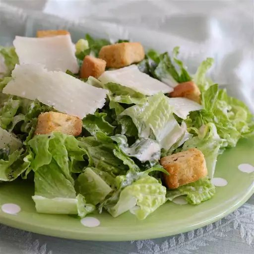

Caesar Salad Recipe

Description:
This recipe is the world famous Caesar Salad,
It has over 300+ 5 star reviews.
Ingredients:
- 2 anchovy fillets
- 2 cloves garlic, chopped, or to taste
- 1 cup mayonnaise
- 1/3 cup grated Parmesean cheese
- 1/4 cup half-and-half
- 2 tablespoons fresh lemon juice
- 1 tablespoon Dijon mustard
- 2 teaspoons Worcestershire sauce
Steps:
- Combine anchovy fillets with garlic in a food processor and pulse several times to form a paste.
- Process mayonnaise, Parmesan cheese, half-and-half, lemon juice, Dijon mustard, and Worcestershire sauce with anchovy mixture until dressing is creamy.
- Refrigerate for 1 hour or more before serving.
Home